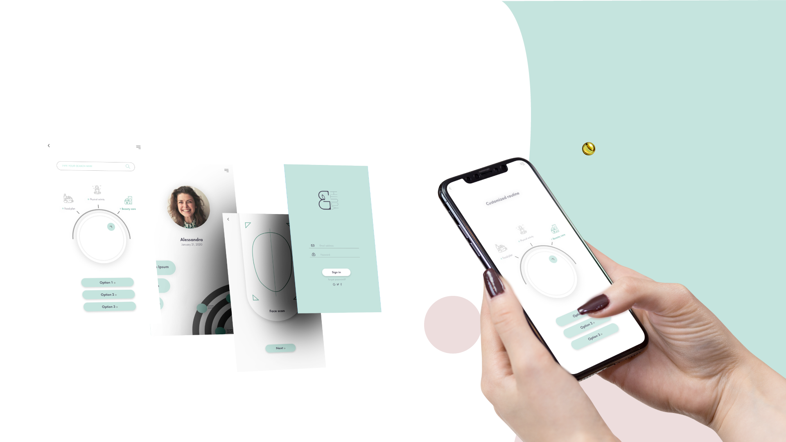
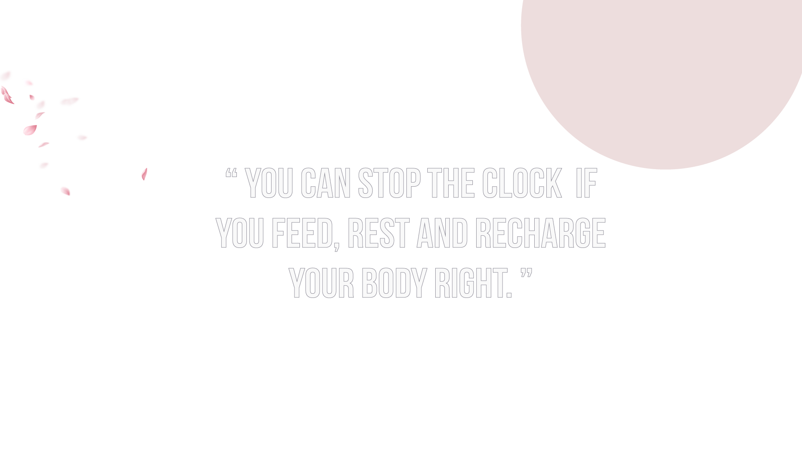

Aims of the project:
To enhance an idea of deeply personalized digital service focused on “beauty and wellness”.
A four days work shop that was meant to analyze the AI (artificial intelligence) in the field of self care usage.
To enhance an idea of deeply personalized digital service focused on “beauty and wellness”.
a digital idea to Improve the user experience of people that cares about their beauty and having an affective interactions, context-aware, predictive and deeply personalized service.
The different types of users who are looking for an efficient way to take care of their beauty and wellness.
Mareya
Benedetta
Hadeel
the starting point was challenging because of the fact that there was no actual project we were working on, so the research had to be based on the information provided to reach a digital service design.
 Persona : Style driver
18 - 50 years old
“ BYOUTH is the only app that boosts your youth for people who want to remain young, keep glowing and be self con fident by measuring and tracking their skin health.
Only using natural products. ”
[Analysis]
[Service design]
[Research methodology]
[Artificial Intelligence]
[Ux design]
[Empathy map]